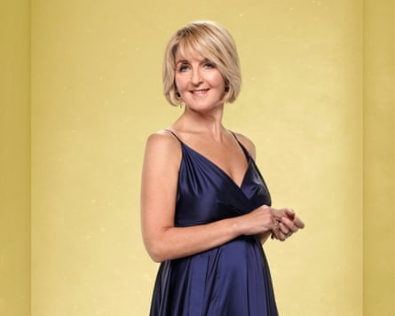
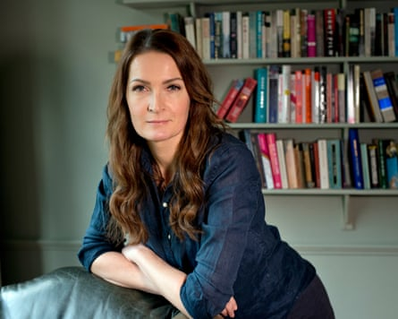
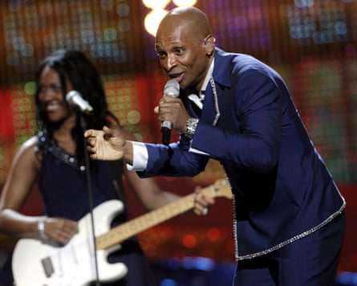
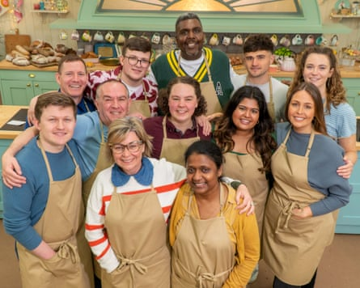

W e often hear about the people who win TV contests. As well as the glory of victory, they might earn an enviable cash prize, a lucrative record deal or a life-changing career boost. But what about those who finish last? Are they philosophical in defeat or throwing tantrums behind the scenes? We tracked down five TV losers to relive their failure in front of millions, reveal how they recovered from humiliation and share what they learned.
‘I should have been more vulnerable, maybe cried’
Communication scientist Yin Lü was “murdered” in the opening episode of the third series of The Traitors UK.
I applied for The Traitors because it’s a show about communication and social dynamics. That’s my obsession, so it was like the perfect experiment. I took 51kg of luggage. One of my strategies was to utilise my wardrobe. I had jumpers with hearts on, tops with big bows and cute hair accessories for a softer look. I wanted to come across as whimsical to make myself less threatening. I decided not to mention my job and said I worked in marketing.
I’d chatted to the sisters, Armani and Maia, on the steam train. With hindsight, I was too high-energy and articulate, which marked my card as a potential threat. When Armani was selected as a Traitor, she became the driving force behind my murder. Summoned to the yellow sofa room, I delayed picking up the murder note for as long as possible and read it slowly. As the words percolated, my heart fell out of my chest. It was very visceral. We were all warned we could be first out and to be prepared. But after you’ve met people and bonded, it’s different.
Murder capital … Yin Lü (far left) and the 2025 cast of The Traitors.Photograph: Cody Burridge/PA
I’m sad I didn’t get to experience a breakfast or a Round Table. It felt as if I’d only had a tiny taster of an extravagant 12-course meal. It was gut-wrenching to watch the series after I was booted off. The missions were brilliant. I would’ve loved to topple that giant Traitor statue. I should’ve been less confident, maybe shown some vulnerability by crying. I also wish I’d volunteered to get off the train. I would’ve loved to descend in a cage and talk my way back into the castle! Rhetoric is my speciality.
Millions watched my murder on New Year’s Day. My friends and family thought I was robbed. I went into hibernation mode because the online reaction was too much. It’s astounding how people judge you on a few minutes’ screen time. It felt exposing and knocked my confidence quite substantially. January was hellish. What helped was finding my own voice. I starting posting on social media, even some silly songs I’d written during my time there.
The Traitors fandom pointed out that mine was the earliest exit in all the global editions. So embarrassing. With time, I’ve learned to laugh at it. You can’t take life too seriously, and discover so much more about yourself by losing. I’m still getting recognised and people are always positive. It was a privilege to be part of the show – even if it was for just a flap of a lunar moth’s wing.
‘I didn’t leave my hotel room for 24 hours’
Journalist, presenter and Loose Women panellist Kaye Adams was the first celebrity to be eliminated from Strictly Come Dancing 2022 .
Sheer desperation … Kaye Adams on Strictly Come Dancing, series 20.Photograph: Ray Burmiston/BBC
I was about to turn 60, so Strictly seemed like a sign from the universe. I secretly wanted a journey of self-discovery. I hoped there was something hidden inside me to bring out – but it turned out there was nothing! My professional partner Kai Widdrington was endlessly patient and encouraging. We invented an alter ego for my flamboyant side named Fifi LaTouche, like some kind of superannuated can-can girl. Sadly she didn’t exist.
Our first dance was a tango to Abba. Draped on this bordello-type bar, all I could think was that it looked like grab-a-granny night. It was the most petrifying thing I’d ever done. I genuinely considered hypnotism to overcome my nerves. By week two, I was running on empty. We did a Charleston and I utterly blanked. I had a terrible dress rehearsal, so I was cacking myself. One of the makeup girls had some awful Greek liquor she’d bought back from holiday and I took a shot out of sheer desperation. I thought it might do something to me and it did. It made me worse!
I read an article that morning which mullered me. The idea started to eat away that people were laughing at me. As a woman of a certain age, you fear being a laughing stock. There are so many old tropes, like mutton dressed as lamb. I’m not usually seeking that kind of approval but on Strictly, you’re seeking approval on a huge scale in a public vote, like it or not. My mood was very low. By the dance-off against Matt Goss, I was done.
Shirley Ballas, the head judge, voted for me to stay. I was grateful because it gave me a tiny bit to walk away with. I was as gutted as I’ve been about anything. I didn’t leave my hotel room for 24 hours. I was embarrassed to go out. It was a much bigger deal, emotionally and psychologically, than I anticipated.
When I went back for the group dance in the final, they could easily have hidden me at the back but I opened the routine. I’m still thankful for that, because it gave me some self-respect. The female pros could see how nervous I was they were so sweet and supportive, giving me last-minute tips. It went well, which truly helped me get over it.
I was in awe of the whole production but personally, it was quite a sore experience. I’m not a terrible dancer but razzle-dazzle takes such confidence. If you allow negative thoughts to creep in, you’re sunk. You go into these shows hoping for growth but Strictly just confirmed my self-doubts. It was difficult for a long time. I didn’t watch the show for two years out of self-preservation. Abba still trigger me! But you’ve got to be able to fail or you’d never try anything. Now I’m grabbing my 60s by the short and curlies.
Kaye Adams’ podcast, How to Be 60, is released bi-weekly and will be live at Edinburgh fringe, 10-12 August
‘We went for a stiff drink and laughed about it’
Sophie Walker captained Reading University to the final of Christmas University Challenge in 2017, only to lose by a record 240-0.
Starter for 10 … Sophie Walker.Photograph: Sophia Evans/The Observer
When I was asked to go on University Challenge , my immediate thought was ‘Absolutely not. Next!’ But at the time, I was leading the Women’s Equality party and we got very little media coverage. This was a chance to raise awareness of our work, so eventually I said OK. I assumed I’d be there for one round and out.
My teammates – anthropologist Anna Machin, naturalist Martin Hughes-Games and gardener Pippa Greenwood – were lovely people who were equally bemused by how they got into this. Other teams were taking it Very Seriously – capital V, capital S – so we agreed to have fun. I was stunned when we got through. We won the next round too and were suddenly in the final. Our opponents were Keble College, Oxford but we were mainly up against Frank Cottrell-Boyce. He knew vast amounts of stuff and was fast on the buzzer. At one point, he answered 10 in a row. I was like, ‘Alright Frank, enough!’ One reason I don’t feel any despair is that he’s a prince among men with an extraordinary brain. I’d invite anybody to go up against Frank and do better.
As questions flew past, I remember thinking: ‘I went to a secondary comp in Glasgow – this wasn’t on the syllabus!’ But we still enjoyed ourselves. At one point, Jeremy Paxman told us to stop giggling. The crosser he got with us, the funnier it seemed. When the gong went, we weren’t cowed by our failure. I gathered everybody up, took them for a stiff drink and laughed about it. Pippa and I were invited on Woman’s Hour to discuss being the first team to get no points. There was lots of mickey-taking, not least from my university chums. They were like, ‘Thanks a lot for that!’
Leading a start-up political party, looking like an idiot is an everyday risk. I can think of 10 more embarrassing things I did before breakfast the next day. We set a rather unfortunate record, but not everybody can say they’ve got through to the University Challenge final. I’ll take that.
‘At least I beat Dustin the Turkey’
Andy Abraham was the UK’s entry in the 2008 Eurovision song contest and came last with only 14 points.
Euro star … Andy Abraham at the 2008 Eurovision song contest.Photograph: Sari Gustafsson/Shutterstock
It felt great to win Eurovision: Your Decision – although I thought the public were off their heads. My song was soulful, not a Euro-type tune! Michelle Gayle had been bookies’ favourite and was very upset. As soon as the result was announced, she was off. I thought: ‘Wow, be a bit more gracious.’ Representing your country is a big deal. My only worry was being beaten by Dustin the Turkey. Ireland didn’t want the expense of hosting again, so they sent a puppet. Luckily, he was knocked out in the semi-final. At least I did better than the turkey!
Serbia was strange. We were escorted everywhere by machine gun-wielding security but my song, Even If, went down a storm in Belgrade nightclubs. They dug it in the arena, too. The crowd danced and sang along, but it didn’t translate to viewers at home. Jean Paul Gaultier came over from the French delegation and said he loved it. I did myself proud. The rest was in the lap of the gods. We had an inkling that political voting might happen. As the results came in, I wasn’t embarrassed. I might’ve been if I’d forgotten the lyrics, stumbled or been off-key but I was over the moon with my performance. No way we deserved to finish that low down.
I went to the BBC booth to see Terry Wogan. He was crestfallen and said ‘I’m so sorry.’ I told him: ‘It’s all good.’ We had a few drinks and the UK delegation – Caroline Flack, god rest her soul, Paddy O’Connell and co – had a brilliant time. They didn’t feel let down by me, only by how severe the anti-UK voting was. That year, Terry quit. He said it had gone too far and was no fun any more.
Back home, people sympathised because I was hard done by. I’m a working-class boy – before The X Factor, I was a binman – which keeps things in perspective. If music came to an end, I’d just go back to grafting. The only thing I’d do differently is go out there earlier to promote the song. There wasn’t enough momentum behind it. I was also second on the bill, the dreaded slot of death. Maybe if I’d performed last, who knows?
Eurovision was a career highlight and wonderful experience. I wouldn’t trade it for anything. In fact, I’d do it again. Whenever I perform Even If live, I joke about it and say ‘Thanks for the 14 points, guys!’ The whole room always starts clapping and cheering.”
Everything That You Do, the new single by Benjamin Race feat Andy Abraham, is out on 18 July.
‘The showstopper stopped my show’
Amos Lilley was the first baker to be sent home from The Great British Bake Off 2023.
Ready, steady, go … Amos Lilley (centre back) in series 14 of The Great British Bake Off.Photograph: Mark Bourdillon/Channel 4
It was surreal walking into the famous tent. I’m 6ft 5in, so they made a little plinth to raise my workbench. The opening round was a vertical layer cake. I was nervous, got into my own head and overdid it. By the technical challenge, I felt calm. We made the iconic Bake Off cake from the title sequence and mine came second. I felt elated. Maybe it gave me false hope!
It was the showstopper that stopped my show. For my animal cake, I made an orca. Why choose a whale? I should’ve done Colin the Caterpillar! I was disappointed with how it turned out and said it ‘looked like a piece of poo’. Even worse, Paul Hollywood called my sponge ‘tough as old boots’. It was horribly tense, awaiting the result. I knew I was in danger but a few of us were. No way I thought I’d be going home.
When Noel [Fielding] called my name, I felt myself leave my body. It was my second time applying, so I’d been building up to this for two years. In an instant, the journey was over. Viewers were outraged. I was inundated with messages, which softened the blow. Thanks, Bake Off fans! I’d planned out all 10 weeks – my outfits, my bakes. I’d bought special equipment and stands. When I went back home, I chucked it all away like a diva. Don’t need this! Don’t need that! But the show changed my life. I quit my job. Now I’m setting up my own bakery, Lilley’s Luxurious Cakes. My early exit knocked my confidence but with time, I realised I’d done well to get that far. It’s two people’s opinion and only a TV show. And I got recognised at Abba Voyage last night, so I must’ve made an impression. It was also a landmark episode – Alison Hammond’s first as co-host and it featured Prue Leith’s beaver innuendo. That clip will be replayed for a long time – and I’m one of the people in hysterics.